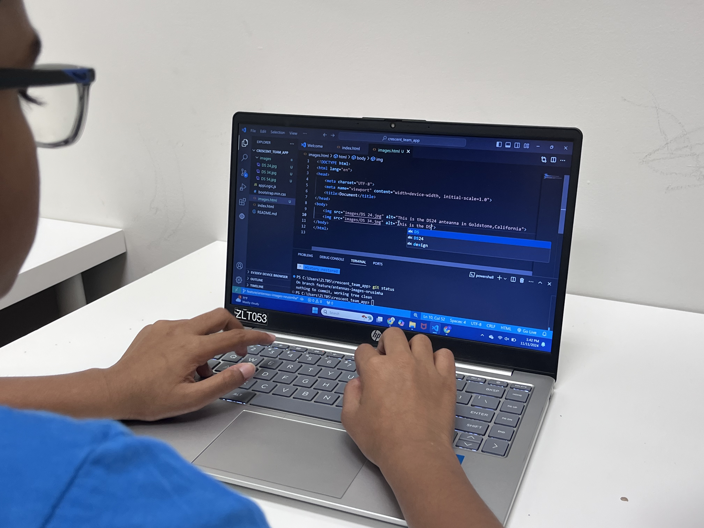
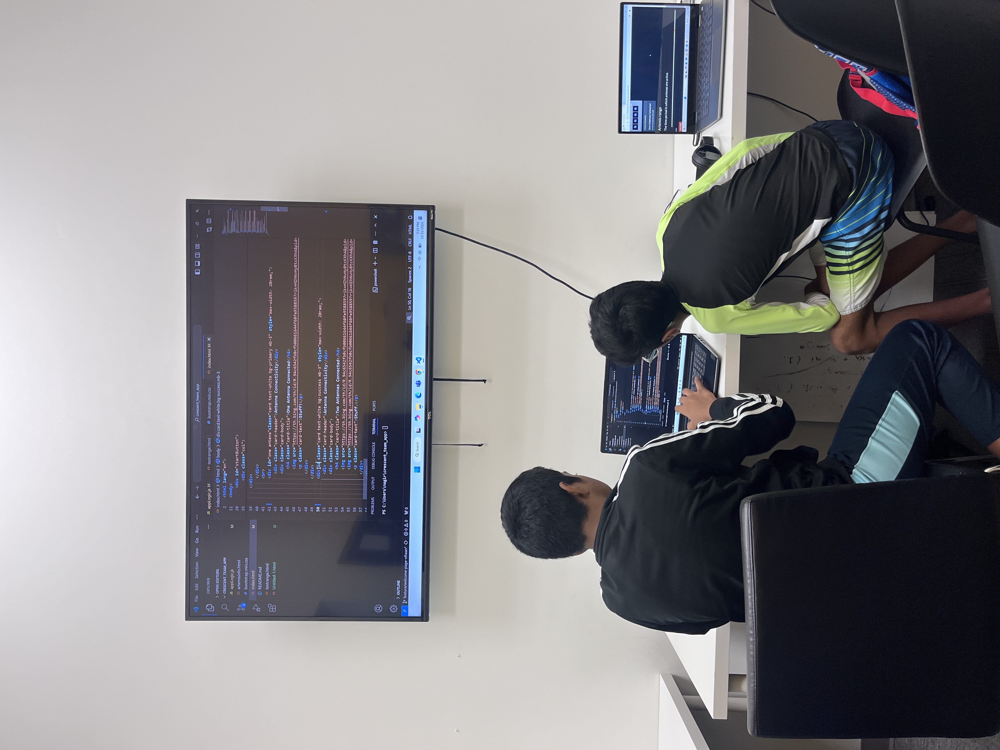
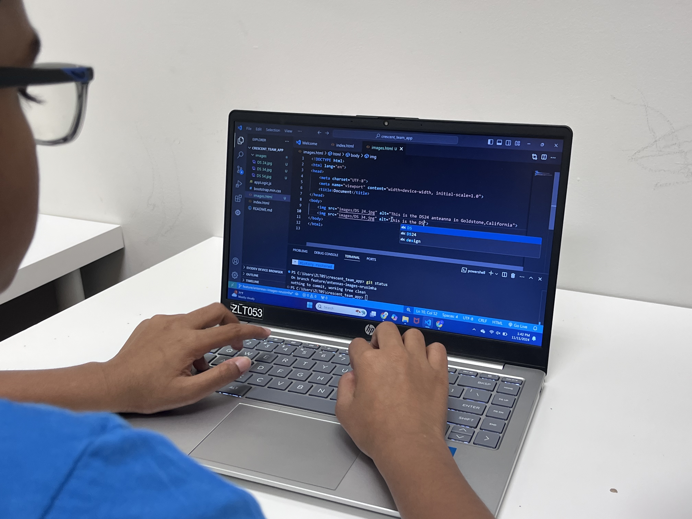
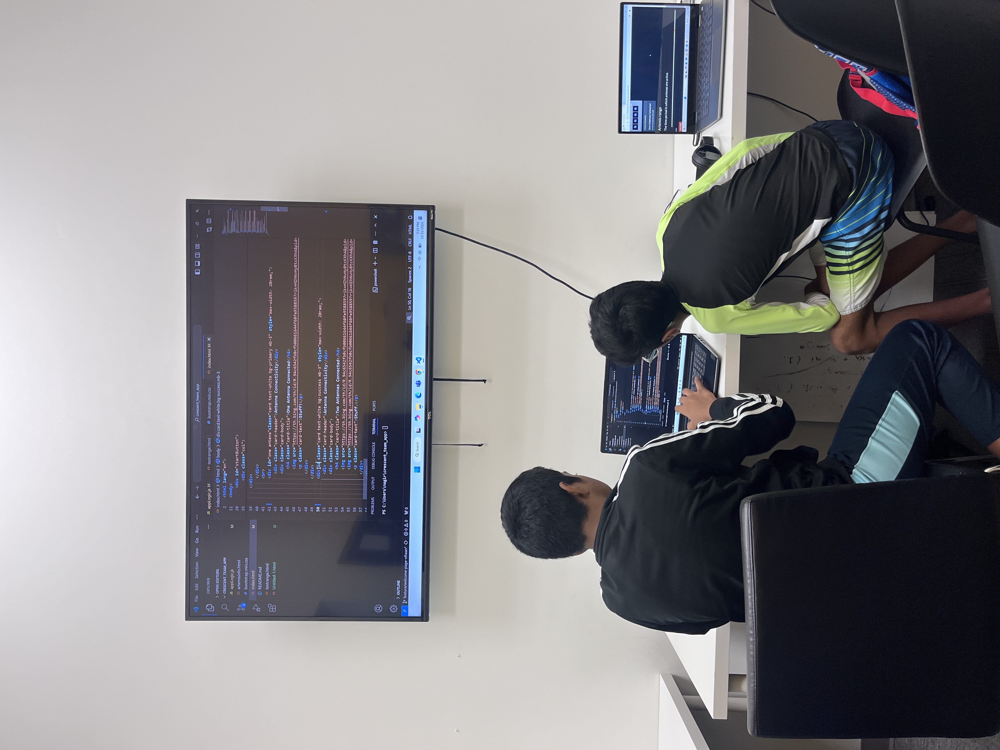
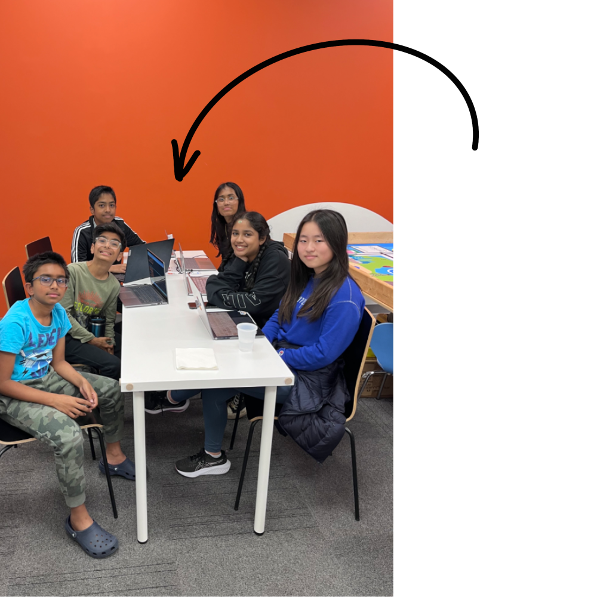
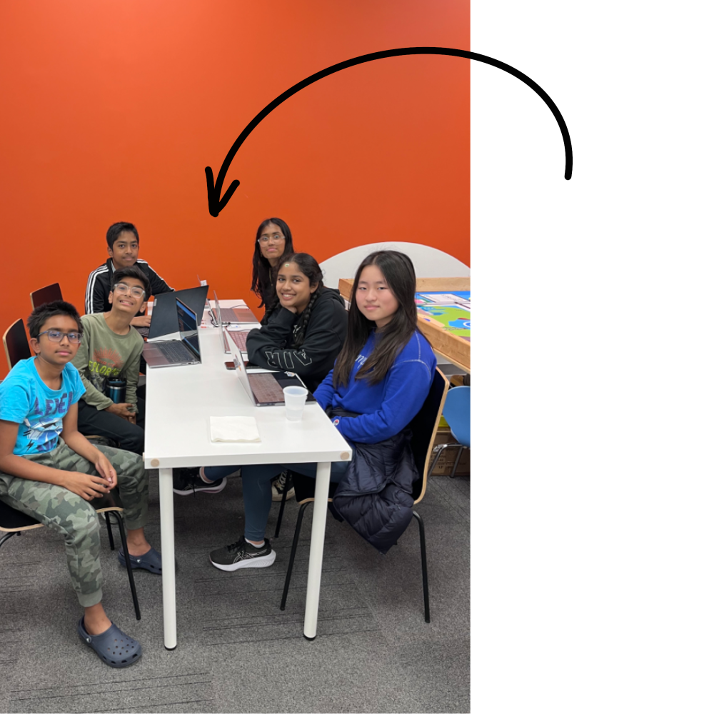

What IS Artemis II?
Artemis II is the first manned mission of nasa's Artemis program, which aims to bring humans back to the Moon and ultimately establish a sustainable human presence. The mission will be an important step towards long-term space exploration, including preparation for future manned missions to Mars.
Artemis II will be the first crew mission to travel around the Moon since 1972's Apollo 17. The main goal is to enable astronauts to ride and explore the original space in deep space, including life support systems, navigation, communications, and other systems important for future deep space exploration.
Artemis II is an important step in proving the capabilities of both Orion and SLS rockets for future lunar exploration. This is the predecessor of Artemis III, a mission that actually lands astronauts on the Moon, with the goal of landing at the Moon's South Pole as early as 2025.
Artemis II is an exciting step in the next era of space exploration, showcasing progress from the Apollo era and setting the stage for humanity's return to the Moon.
What have we done so far?
For Artemis II, middle school groups are typically encouraged to engage in educational and interactive projects related to NASA's Artemis program, specifically the mission to return humans to the Moon and beyond. While specific tasks can vary based on the organization or event hosting the activities, here are some ideas and objectives our middle school group engaged in while working on Artemis II:
Our middle school group has been working on the Artemis II mission by creating Plotly graphs to visualize the spacecraft's path and trajectory, helping us gain a deeper understanding of the mission's complexities. Through this process, we've been steadily progressing toward our goal of mastering the key elements of the mission and the necessary data analysis. While we are moving forward step by step, we're continuing to build our knowledge and skills as we work toward a complete understanding of what needs to be done.
 



 

So, what are our next steps?
We are in the final stretch, with only three meetings left, including the one next Friday. Our focus this week is to make your application as complete as possible by Friday. Why? Because we still need to finalize the video and outreach activity, and we have just two meetings left to complete these. This week, during class, our priority is to finish your coding tasks and push them to the branch. It’s crucial that we focus on functionality first—ensuring the core features work properly—before we dive into the smaller details.
Here are the tasks that need to be completed:
- - Yuvika: Data update.
- - Jodi: Continue script for video and assist Varnika with the webpage.
- - Varnika: ADC challenge presentation webpage for outreach.
- - Nrusimha: Quantum webpage for outreach.
- - Vihaan and Mani: Antenna range prioritization (Yuvika can assist once the data update is done).
We’re almost there—let's keep pushing to finish strong!